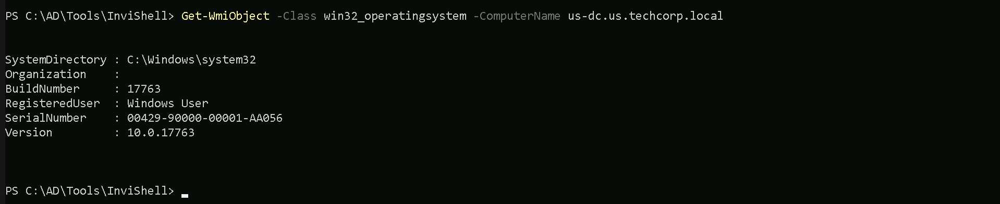
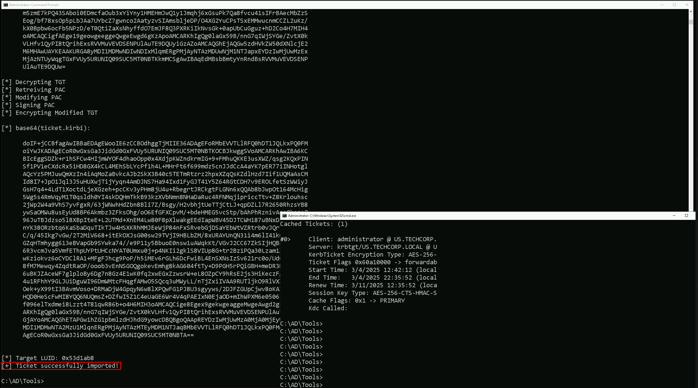

CRTE - Certified Red Team Expert
Domain Persistence - Diamond Ticket Attack
Let us now explore the concept of Diamond Ticket, a relatively lesser-known but highly effective technique in the realm of Active Directory exploitation. To fully grasp its significance and application, we must delve into its mechanics, prerequisites, and how it differs from other Kerberos-based attacks like Golden and Silver Tickets. Diamond Ticket is essentially an advanced form of Kerberos ticket forgery that allows us to create a Ticket Granting Ticket (TGT) for a specific user account without needing the krbtgt account's hash or any service account credentials. This makes it distinct from both Golden and Silver Tickets. Instead of relying on the krbtgt account or a service account, we use the NTLM hash of the target user account itself. By forging a TGT for this user, we can authenticate as them across the domain, gaining access to resources they have permissions for. To better understand how this works, let us first revisit the Kerberos authentication process. In a typical scenario, when a user logs in, their credentials are verified by the domain controller, which issues a TGT signed with the krbtgt account's key. This TGT is then used to request service tickets (TGS) for accessing various resources. However, if we already possess the NTLM hash of the target user, we can bypass the domain controller entirely and generate our own TGT for that user. This forged TGT will allow us to authenticate as the user without needing their plaintext password or direct access to the domain controller. The process of creating a Diamond Ticket involves using tools like Mimikatz, which provide the necessary functionality to forge Kerberos tickets. With Mimikatz, we can specify the target user's NTLM hash, their username, and other relevant parameters to craft the forged TGT. Once the ticket is created, we inject it into memory, enabling us to interact with the domain as if we were the legitimate user. This approach is particularly useful when we have compromised a user's credentials through methods such as credential dumping or pass-the-hash attacks. Now, let us discuss the advantages and limitations of Diamond Ticket. One of its key strengths is its ability to operate independently of the krbtgt account, making it less detectable than Golden Ticket attacks. Since it does not involve tampering with the krbtgt hash, it avoids triggering certain security alerts that might be configured to monitor for anomalies in TGT issuance. Additionally, unlike Silver Ticket, which is limited to specific services tied to service accounts, Diamond Ticket provides broader access to resources within the domain, similar to Golden Ticket. However, there are limitations to consider. For instance, the forged TGT generated by a Diamond Ticket is valid only for the specific user account whose credentials we have compromised. This means we cannot escalate privileges beyond what the user already has. Furthermore, the ticket's validity period is constrained by the domain's Kerberos policy settings, such as maximum ticket lifetime and renewal periods. If these settings are configured strictly, the effectiveness of the attack may be limited. Let us now compare Diamond Ticket with Golden and Silver Tickets to highlight their differences. Golden Ticket involves forging a TGT using the krbtgt account's hash, granting unrestricted access to all resources in the domain. It is powerful but also more likely to trigger alerts due to its reliance on the krbtgt account. Silver Ticket, on the other hand, focuses on forging service tickets (TGS) for specific services using the credentials of service accounts. While it is more targeted and less conspicuous than Golden Ticket, it is limited to the scope of the service being attacked. Diamond Ticket strikes a balance between these two techniques by providing domain-wide access for a specific user without involving the krbtgt account or service accounts. This makes it a versatile option when we need to authenticate as a particular user without drawing attention. In conclusion, mastering Diamond Ticket requires a solid understanding of Kerberos authentication, proficiency in using tools like Mimikatz, and the ability to identify suitable user accounts for exploitation. By leveraging this technique, we can gain authenticated access to domain resources without relying on the krbtgt account or service accounts, making it a valuable addition to our offensive security toolkit. While it may not offer the same level of unrestricted access as Golden Ticket or the targeted precision of Silver Ticket, its unique characteristics make it a powerful and stealthy method for domain compromise.Diamond Ticket With Rubeus
For this demonstration, I’ll be using Rubeus commands. I’ll also be focus on OPSEC care by using PELoader.exe and ArgSplit.exe to encode the argument(diamond). Executing ArgSplit.bat for argument encode and copy/paste the result to CMD. ArgSplit.batset "z=d"
set "y=n"
set "x=o"
set "w=m"
set "v=a"
set "u=i"
set "t=d"
set "Pwn=%t%%u%%v%%w%%x%%y%%z%"
Below are the credentials for the KRBTGT account.
SAM Username : krbtgt
Account Type : 30000000 ( USER_OBJECT )
Object Security ID : S-1-5-21-210670787-2521448726-163245708-502
Object Relative ID : 502
Hash NTLM: b0975ae49f441adc6b024ad238935af5
aes256_hmac: 5e3d2096abb01469a3b0350962b0c65cedbbc611c5eac6f3ef6fc1ffa58cacd5

- -path: Specifies the path to the Rubeus executable.
- -args: Specifies the arguments to be passed to the Rubeus executable.
- /krbkey: Specifies the KRBTGT key.
- /tgtdeleg: Specifies the target delegation.
- /enctype: Specifies the encryption type.
- /ticketuser: Specifies the user for the ticket.
- /domain: Specifies the domain.
- /dc: Specifies the domain controller.
- /ticketuserid: Specifies the user ID for the ticket.
- /groups: Specifies the groups.
- /createnetonly: Specifies the network-only creation of the ticket.
- /show: Displays the ticket.
- /ptt: Prints the ticket to the console
